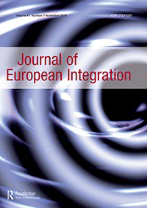

收录于合集
作品简介
【作者】 Ramona Coman，布鲁塞尔自由大学政治学副教授和欧洲研究所所长，研究方向包括欧盟与中东欧的治理模式、法治、智库、政策变化与协调以及主权，目前主要研究的项目是“危机中的欧盟主权冲突”。Cécile Leconte，法国里尔大学政治科学高级讲师，研究方向包括区域一体化、欧盟政治、比较政治(激进右翼、民粹主义)和社会科学方法。
【 编译】 杨艺华（国政学人编译员，华东师范大学国际关系与地区发展研究院）
【校对】 曹鹏鹏
【审核 】 金琳
【排版】 王国伟
【 来源 】 Coman, R., & Leconte, C.(2019). Contesting EU authority in the name of European identity: the new clothes of the sovereignty discourse in Central Europe. Journal of European Integration , 41 (7), 855-870.
期刊介绍
期刊简介

欧洲一体化期刊（Journal of European Integration）出版各种关于欧洲一体化进程研究的学术著作，还发表关于联邦制、区域一体化和其他形式的多边合作的比较研究，以及关于欧盟的对外关系及其全球作用的文章。该期刊鼓励跨学科和多学科视角，但侧重运用政治科学和国际关系讨论欧洲一体化。
以欧洲身份的名义质疑欧盟权威：中欧主权话语新外衣
Contesting EU authority in the name of European identity: the new clothes of the sovereignty discourse in Central Europe
内容提要
** 近年来，匈牙利、波兰和奥地利的政府官员在民主、法治和移民等与核心国家权力相关的领域质疑欧盟的权威。通过分析这些国家的保守党或右翼政府所使用的话语策略，本文认为，传统上形塑一体化进程的旧主权冲突线（超国家与国内主权的对立）正在被新话语所补充。新话语的特点是反对多元文化和政治自由主义，并以欧洲价值观和共同的欧洲身份的名义抨击欧盟对成员国的“干预”。这一话语由匈牙利总理欧尔班·维克托（Orban Viktor）首创，难民危机之后一直在其他中欧政府首脑和现任政党官员中流传。难民危机为该话语扩散开辟了一个话语机会结构。**
文章导读
在欧洲一体化的进程中，国家的主权正逐渐向欧盟层面转移和集中。尤其在《马斯特里赫特条约》生效以来，欧盟的行动范围已经扩展到了许多原属于国家主权核心领域的事务，以协调成员国在社会经济管理、司法与国内事务、防务和安全等敏感领域内的政策。因此，尽管欧盟从未声称自己拥有主权，但欧盟的机构事实上正以集体的方式享有主权并限制了成员国的主权，这使得主权的冲突容易发生。而且，主权涉及“言语行为（speech act）”，这使得关于主权宣称的冲突更易发生。
在本文 中，作者 主要 分析了两个 主权冲突的背景， 一个 与匈牙利、 波兰和奥地利 对 欧盟 共同价值观 的质疑有关，另一个与难民危机有关。
一、 从自治权到民主的非自由主义
二十世纪九十年代，共产主义的崩溃、欧盟接连不断的东扩浪潮，以及后共产主义国家民主过渡的不确定性，为定义欧盟存在的理由及其作为价值共同体的基础打开了一扇机遇之窗。为加强各国之间的联系，《马斯特里赫特条约》在第二条规定了一组原则，如“尊重人的尊严、自由、民主、平等”和“将尊重人权（特别是少数人的权利）作为成员国的共同价值观，同时重视多元主义、非歧视原则、宽容、正义、团结、男女平等”。为了维护这些价值观，《阿姆斯特丹条约》在第七条规定了欧盟可以对不尊重第二条所载价值观的成员国进行惩罚。
本节表明, 2000年在政治上对奥地利进行的错误制裁是国家权利话语出现的里程碑，而2010年匈牙利和波兰政府对欧盟价值观的批评是以“欧洲身份”抗议欧盟权威这一现象出现的里程碑。在这两个时间点，虽然对欧盟干涉的批评都以民主的名义出现，但在2000年时奥地利的批评所援引的是自治权，而2010年匈牙利和波兰政府援引的是关于民主的另一种理解——关于民主的非自由主义理解。
（一）2000年对奥地利政府的制裁和基于价值观的疑欧主义的兴起
2000年，奥地利建立了包括保守派人民党和极右翼自由党在内的联合政府，欧盟第一次认真考虑了援引第七条惩罚奥地利的可能性。 然而，由于没有足够的法律依据，其他14个成员国只能对奥地利采取双边外交制裁，以象征性地表达它们对一个以对纳粹主义态度模糊著称的政党的不满。 这些制裁实际上为自由党的反欧盟言论提供 了口实 ，就连奥地利的反对党也认为欧盟的行为构成 了对 奥地利自治权的侵犯。
不仅如此，所有欧盟成员国国内的社会保守主义者和右翼政客都认为欧盟正试图向奥地利强加一种多元化和多元文化的社会模式，并认为制裁是对成员国国内事务的非法干涉。 他们认为，自治权应该适用于所有与集体身份(“谁属于这个国家?”)和“生活方式”相关的政策选择， 这构成了基于价值观的疑欧主义。
（二）匈牙利和波兰以“非自由民主”的名义质疑欧盟权威
自20世纪90年代东扩以来，欧委会在哥本哈根标准的实现方面已逐步获得权力，特别是在建立候选国的民主制度和独立的司法运作方面。司法独立成为入欧的必要条件 。 但是 ，在 2004年入欧后，匈牙利 和波兰 却一直暗中或公开质疑欧委会处理组织和司法独立性相关事务的权力。 例如，在匈牙利，为了加强对法官提名的政治控制和限制司法的独立性，上台的青民盟决定在任期结束之前替换相当数量的法官。而且，2011年通过的新宪法规定了“混合”政治体制，削弱了宪法法院的作用，以加强主要政党的作用。
匈牙利 和波兰 利用国家主权的借口，拒绝来自欧盟或其他超国家（国际）参与者的任何建议。 2012年，欧尔班·维克托表示，“匈牙利不会成为殖民地，欧盟不该告诉匈牙利人如何处理国内事务”。在2016年，贝亚特在欧洲议会中宣布，“关于波兰宪法法院的争端是政治事务而不是法律事务，属于波兰的内部事务”。2017年12月，欧盟委员会启动针对波兰的第七条；2018年9月，欧洲议会投票启动针对匈牙利的第七条。
匈牙利和波兰对欧盟权威的挑战，不仅表现为接受经典的主权论观点，还表现 在 假装以对民主有不同理解的名义采取行动。 例如，在2010年，匈牙利总理欧尔班·维克托曾自豪地宣称，匈牙利政府寻求在欧洲中心建立一个非自由的民主国家。匈牙利和波兰确实声称有不同的民主模式和司法运作方式。在减少法官权力时，匈牙利政府发表了大量声明以“加强其作为法治国家的承诺”，认为“没有统一的民主模式”。
** 二** 、 作为“两个欧洲”叙事的话语机会结构的难民危机
（一）自称是“欧洲社会模式看门人” 的欧尔班
“两个欧洲”的话语正 是 出自欧尔班。他认为自己代表欧洲普通公民的真实、接地气的价值观(包括安全、家庭生活、民族自豪感等等)，而欧盟代表的是缺乏社会深度的精英价值观。 例如，他曾经声称，“欧洲人经常提到欧洲的价值观，但他们好像常常把这些价值观藏在布鲁塞尔某个安全的地方，只有少数有特权的人能接触到钥匙。事实是，这些价值观本应在欧洲公民心中根深蒂固。”
而且， 欧尔班还 使用 了 话语策略（ discursive strategy ）。 这种策略与上世纪70年代法国新右派运动（Nouvelle Droite）中提出的策略类似，即利用政治对手在意识形态方面的言论，同时对其加以歪曲，使其最终传达出与本意相反的信息。 欧尔班的话语策略的核心在于，西欧自由主义背叛了其最初的、具体的基督教价值观，如勇气、诚实、忠诚和仁慈。 在他看来，在欧盟，个人“被从文化、民族、宗教和性别身份中剥离出来，沦为本能的集合”。而且，欧尔班甚至把自己描绘成欧洲启蒙运动遗产的真正继承者。事实上，就像“911”后西方大多数极右翼政党一样，他阐述了一种认同的自由，一种对言论自由、性别平等等典型的欧洲价值观和伊斯兰教的戏剧化的、所谓的反对。
欧尔班的言论呼应了当今欧洲激进派和保守派中广泛流传的另一种观点，即：欧洲是“反向殖民”的受害者，是所谓的“被替代者”(非基督徒同胞和难民取代了“原住民”)。 在与所谓的“替代者”的斗争中，在试图阻止移民进入匈牙利的过程中，欧尔班讽刺地把自己塑造成一个自由斗士，一个为欧洲价值观的存续而奋斗的看门人。他 声称， “今天的关键是，欧洲、欧洲公民的生活方式、欧洲价值观和欧洲国家是会继续存在还是消失，还是会变得面目全非”。
（二）自称“欧盟边界和人民主权看门人”的莫拉维茨基和库尔兹
2015年的难民危机为欧尔班关于“两个欧洲”的话语打开了一个话语机会结构，促进了其在其他中欧国家之间的流通。 话语机会结构（discursive opportunity structure）是指，特定的主张或框架有可能在既存的意识形态和文化中产生共鸣，从而在公众中引起关注。本文的话语机会结构是指，在难民被日益塑造为东道国的文化威胁的背景下，“试图进入欧盟的异常大量的难民会对欧洲身份构成威胁”这一主张就会产生共鸣。
而波兰总理莫拉维茨基和奥地利保守党领袖库尔兹正是 利用了难民危机， 效仿了欧尔班的话语策略。 从一开始，莫拉维茨基就声称欧盟的移民配额制度会侵犯国家主权，并认为波兰有权决定谁将来到波兰。
与匈牙利和波兰不同，奥地利在2015年和2016年欢迎移民的到来，但是公众辩论的基调很快发生了变化。 “保护”奥地利不受移民潮的影响而确保边境的安全，逐渐成为一个道德责任、勇气和诚实的问题。在这种情况下，当时的保守党领袖兼外交大臣库尔兹模仿了欧尔班的话语 策略 。 考虑到2016年秋季即将举行的议会选举，库尔兹开始将自己塑造成一名保护欧洲免受外国“入侵”的“自由斗士”，并在2016年3月将自己塑造成“封堵巴尔干路线的人”，从而积累了政治资本。库尔兹蔑视欧盟，称其为“人贩子”，认为欧盟无法找到解决移民流动的共同方案。他宣称，保护奥地利边境是“最有价值的事情”。在国内，他成功地把自己塑造成“巴尔干路线先生”、“欧洲边境的先锋”、“看门人”和“欧洲的救世主”。
不仅如此 ， 在2018年担任欧盟轮值主席国期间，库尔兹 还 使维谢格拉德集团成员国的言论和拒绝以超国家方案解决移民问题的行为合法化。 库尔兹任职奥地利总统的核心理念是：作为一个位于欧洲心脏的国家，奥地利肩负着一个特殊的使命——即“调和”中欧和西欧。而且，库尔兹认为，只有保证欧盟外部边界的安全，人们在申根区内才能自由流动。 这样 ，库尔兹就以 共同 的欧盟价值观的 名义 合理化了 “硬化”欧盟外部边界(以及随之而来的放弃超国家的解决方案)的 想法。
总之，难民危机为保守派领导人打开了一个关键的话语机会结构，使得奥尔班和库尔兹可以把自己描绘成恢复欧洲人民主权的人。通过封锁国家边界来封锁欧洲的外部边界，他们象征性地重申了欧洲公民的自治权。不仅欧盟委员会的超国家难民分配计划被指责侵犯了欧洲公民的自治权(主权冲突的纵向维度)，而且默克尔总理最初欢迎难民来德国的决定也被认为是在自由、精英主义价值观的名义下放弃了人民主权(主权冲突的横向维度)。
三、结论 ****
自从欧洲共同体成立以来，学者们一直试图理解为什么国家将主权转移到超国家机构，以及这种转移如何导致欧洲主权的转变。虽然过去成员国同意将其主权集中并委托给超国家机构，但在后《马斯特里赫特条约》时代以及自2010年以来，成员国和超国家机构之间爆发了新的冲突。这些冲突的共同点是对最终权威的争夺。中欧就是一个恰当的例子，因为在过去十年中维谢格拉德国家一直要求主权。
新的主权冲突涉及两类属于民主传统的关键主权，即议会主权和人民主权。通过上文 的分析，本文认为， 旧 的 国家 与超国家 主权 冲突并没 有 被 这一 新的主权冲突取代。 这次 冲突的新颖之处 在于 ， 在质疑欧盟在法治和移民相关的问题上的权威和超国家决策的合法性时 ， 匈牙利、 波兰和奥地利 使用了 新的话语 。 和撒切尔一样，匈牙利、波兰和奥地利也是在试图挑战欧盟的权威。但不一样的地方在于: 撒切尔是以主权不能被集中的名义声称欧洲不存在一个实体，而这些成员国政府是以欧洲身份和价值观的名义来质疑欧盟权威。这些价值观显然偏离了对欧洲身份的多元、自由和世俗的理解，因此与《欧洲联盟条约》中所载的价值观大相径庭。
然而，正如2018年奥地利担任欧盟轮值主席国所表明的那样，对多元文化和超国家主义的欧盟表示强烈反对的国家有很多，绝不仅限于本文所研究的政府。在这方面，特别有趣的是话语策略，其允许参与者“输出”和“正常化”他们的话语。
与民粹主义激进右翼政党类似，匈牙利、波兰和奥地利并不想离开欧盟。他们的目标是利用现有的欧盟机构来实现他们对欧洲价值观的理解(一个“保护的欧洲”，一个“堡垒欧洲”)，同时促进一种威权政府形式(例如波兰和匈牙利的情况，在那里政治多元化是有限的)。 国家 主权 和超国家主权之间 的对立 并不新鲜，真正 新鲜的 是有 国家试图 改变欧盟的自由主义基础并以欧洲身份的名义宣称主权， 这对 欧盟构成的挑战比英国脱欧更严重。
** _ _ _ 本文由国政学人独家编译推荐，文章观点不代表本平台观点，转载请联系授权。___** 
点“在看”给我一朵小黄花